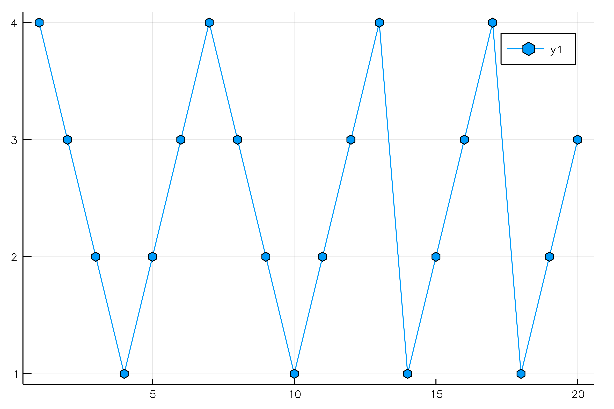

Getting started with directConv functions
Table of Contents
1 Comparison with Julia native conv() function
With Julia native conv function
α=rand(5); β=rand(10); γ_ftt=conv(α,β)
14-element Array{Float64,1}: 0.216624 0.416602 0.646538 0.660492 1.61936 1.15249 1.22127 1.72914 1.44925 1.29137 0.94214 0.65695 0.262058 0.0200272
conv function returns an array of size \(|\alpha|+|\beta|-1\), here
14
With DirectConvolution.jl one must first define a filter with offset=0, then use the directConv function:
α_filter=LinearFilter(α,0) γ_direct=directConv(α_filter,β)
DirectConvolution.LinearFilter_Default{Float64,5}([0.0570966, 0.159702, 0.932971, 0.746808, 0.675408], 0)
10-element Array{Float64,1}:
0.00823509
0.0778808
0.322487
1.11396
1.45592
1.46361
1.37137
1.36605
1.82005
1.46266
A difference with the native Julia conv function is that the
returned signal as the same size as the initial \(\beta\) signal.
Let's use first check that the results are identical (for their common parts):
norm(γ_ftt[1:endof(γ_direct)]-γ_direct)
4.718447854656915e-16
2 Performance
The following is not a complete benchmark, but gives some
ideas. Please also note that for the moment directConv is a pure
Julia, straightforward implementation.
With the given α, β and γ we get:
r_ftt=@benchmark(conv(α,β))
BenchmarkTools.Trial: memory estimate: 9.17 KiB allocs estimate: 132 -------------- minimum time: 36.946 μs (0.00% GC) median time: 43.541 μs (0.00% GC) mean time: 51.735 μs (8.59% GC) maximum time: 21.249 ms (63.96% GC) -------------- samples: 10000 evals/sample: 1
r_direct=@benchmark(directConv(α_filter,β))
BenchmarkTools.Trial: memory estimate: 432 bytes allocs estimate: 5 -------------- minimum time: 551.717 ns (0.00% GC) median time: 573.893 ns (0.00% GC) mean time: 694.201 ns (13.76% GC) maximum time: 34.393 μs (96.89% GC) -------------- samples: 10000 evals/sample: 187
For these short filters we have a
median(r_ftt.times)/median(r_direct.times)
75.86953726308728
speed up.
For a more realistic size for \(\beta\), we still get this speedup:
β=rand(1000); r_ftt=@benchmark(conv(α,β)); r_direct=@benchmark(directConv(α_filter,β)); median(r_ftt.times)/median(r_direct.times)
24.075015278060704
Typical size for \(\alpha\) is around \(5\) for applications like wavelets transform. If we increase this size the direct approach is less and less competitive compared to the FFT approach. However on my computer it is still advantageous to use it for an \(\alpha\) size of \(40\).
α=rand(40); α_filter=LinearFilter(α,0); r_ftt=@benchmark(conv(α,β)); r_direct=@benchmark(directConv(α_filter,β)); median(r_ftt.times)/median(r_direct.times)
2.5229993396169776
3 Versatility
3.1 Parallel computation
The directConv functions can be used in various ways. For instance we can compute a convolution by splitting destination
α=LinearFilter(rand(10),0); β=rand(100); γ_ref = directConv(α,β); # compute all in one call γ = Vector{Float64}(length(β)); directConv!(α,-1,β,γ,1:25); # independant computations 1:25 directConv!(α,-1,β,γ,25:75); # 25:75 directConv!(α,-1,β,γ,75:100); # 75:100 norm(γ_ref-γ) # check that results are identical
0.0
This can be used for parallel computations. (no done yet)
3.2 Boundary extensions
Boundary extensions are rigorously implemented and are free of all limitations. For instance you can even use a filter α bigger than the signal β, with mirror symmetry on left and periodic extension of the right:
α=LinearFilter([0,0,0,1,0,0,0],-6); # with offset=-6, mimic a filter of support 6:12 β=[1,2,3,4]; γ = zeros(Int,20); directConv!(α,-1,β,γ,1:20,MirrorBE,PeriodicBE); plot(1:20, γ, markershape = :hexagon)

With zero padding we can also check commutativity \(\alpha \circledast \beta = \beta \circledast \alpha\):
α=rand(4); β=rand(6); tαβ=zeros(6); directConv!(LinearFilter(α,0),-1,β,tαβ,1:6); tβα=zeros(6); directConv!(LinearFilter(β,0),-1,α,tβα,1:6); norm(tαβ-tβα)
0.0
3.3 Adjoint
From \[ \gamma[k]=\sum\limits_{i\in\Omega^\alpha}\alpha[i]\beta[k+\lambda i],\text{ with }\lambda\in\mathbb{Z}^* \] with free \(\lambda\) we can compute convolution (\(\lambda=-1\)) cross-correlation (\(\lambda=+1\)) and more generally adjoint operator: \[ \forall \lambda\in\mathbb{Z}^*,\ \langle \alpha\bigodot\limits_{\lambda}v ,w \rangle_E = \langle v , \alpha\bigodot\limits_{-\lambda} w \rangle_F \]
This relation only holds true for zero padding and periodic boundary extension:
α=LinearFilter(rand(5)); v=rand(8); w=rand(8); dot(directConv(α,-3,v),w) - dot(directConv(α,+3,w),v) dot(directConv(α,-3,v,PeriodicBE,PeriodicBE),w) - dot(directConv(α,+3,w,PeriodicBE,PeriodicBE),v)
0.0 0.0